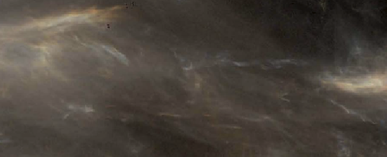
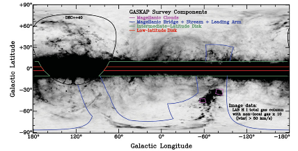

Galaxy evolution is driven by where, when and how stars form. In particular, the flow of material through the interstellar medium (ISM) -- from diffuse plasma to molecular, star-forming clouds -- is crucial. I use sensitive radio observations of neutral hydrogen (HI) and molecular gas to trace this flow in the Galactic and Magellanic ISM.
Decoding ISM phase structure

Unexpectedly warm neutral medium
I detected absorption by the warm neutral medium (WNM) with unexpectedly high excitation temperature , indicating that Lyman-alpha scattering is important for HI excitation, with important consequences for disentangling astrophysical effects from HI signals throughout cosmic time.

Future HI Absorption Surveys
I am the PI of the Measuring Absorption by Cold Hydrogen (MACH) survey at the VLA, which will double the sample of HI absorption measurements beyond the Galactic plane. I am also a member of the Galactic ASKAP (GASKAP) survey team.

Optically-thick HI does not dominate local "dark" gas
test
As a summer student at the National Radio Astronomy Observatory in 2010, I detected the first maser in the Andromeda Galaxy (M31) via methanol emission at 6.7 GHz. This and other higher-frequency masers are good candidates for proper motion studies of M31.